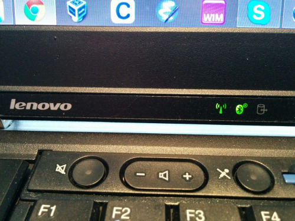

It is somewhat abandoned.

How to get bluetooth working in windows 8 / 8.1 on various thinkpads. Currently, the thinkpads ( w520 for sure, but lots of complaints about others online) do not have working bluetooth drivers. Or rather the driver exists, but getting the bluetooth to turn on is not possible.
I have put together a solution here:
https://dl.dropboxusercontent.com/u/7773580/lenovo/Adams%20bt%20enable.zip
This zip has to batch files that will turn on or off the blue tooth device. It uses the hotkey exe from the windows 7 Lenove hotkey app to force the bluetooth on.
It also contains a bluetooth driver, the one I originally used, however I recommend instead that you go straight to broadcom here: